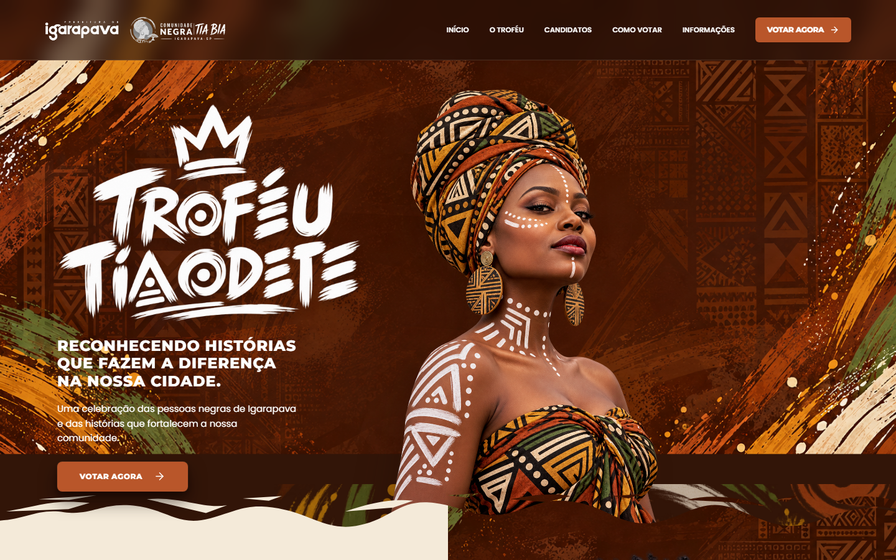
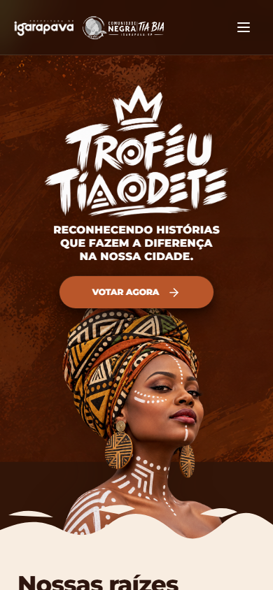

Narrativa cultural & votação
Troféu Tia Odete
Uma experiência para contar a história do troféu, apresentar as pessoas indicadas e orientar a votação.
- História e contexto cultural
- Busca de pessoas indicadas
- Jornada de votação
Prévia do site publicado. O botão abre a experiência completa.
trofeutiaodete.com.br

